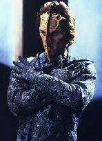
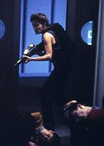
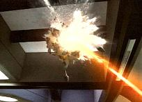
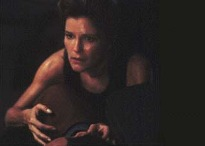
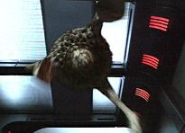
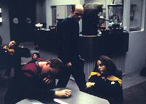

|
MANCHETE
DO EPISDIO
Janeway desfaz o penteado, engatinha,
rola por corredores e testa a fora fsica
Episdio
anterior | Prximo
episdio
Sinopse:
Data
Estelar: 50425.1.
 Ao
retornarem de uma misso comercial com os Tak Tak, Janeway e Neelix
ficam perplexos quando encontram a Voyager deriva no espao.
Depois de pousar sua nave auxiliar no hangar, eles notam que no h
tripulantes vista e que muitos dos sistemas esto desativados.
Enquanto investigam a nave aparentemente deserta, seu turboelevador
atacado por vrias formas de vida, uma das quais faz um rombo na
porta com um longo ferro. Neelix atingido por uma substncia
viscosa, mas a dupla consegue escapar. Porm, no muito depois
Neelix comea a passar mal, levando a capit a correr pelos tubos
Jefferies procura de um kit mdico de emergncia. Quando volta
para medic-lo, ele se foi.
Agora sozinha,
Janeway se arma pesadamente e vai at a ponte, onde picada por
uma das estranhas formas de vida. No Refeitrio, descobre muitos
tripulantes inconscientes, sob a guarda de uma enorme criatura que
tenta atac-la.
 Buscando
refgio na enfermaria, Janeway encontra o Doutor armado com um
feiser. Ele conta que a nave est tomada por um estranho macrovrus
aliengena e explica que, enquanto ela e Neelix estavam fora, a
Voyager respondeu a um pedido de auxlio mdico vindo de uma colnia
de minerao infectada pelo vrus. Alguns dos "bichos"
migraram para a nave quando o Doutor retornou e, desde ento,
espalharam-se pelos sistemas e pela tripulao. O Doutor reporta
que desenvolveu um antgeno, mas que no teve a chance de test-lo,
j que as enormes verses adultas do vrus -- como a que atacou a
capit -- o impediram de deixar a enfermaria. Infectada, Janeway se
candidata a testar a droga e curada. Mas o problema espalhar o
medicamento para toda a tripulao.
 Janeway
sugere que a cura seja distribuda em forma gasosa pelo sistemas
ambientais da nave. Usando seu arsenal, ela luta em seu caminho at
os controles. Mas antes que a capit possa espalhar o antgeno, a
Voyager atacada pelos Tak Tak, que querem exterminar o vrus
destruindo a nave. Janeway conta-lhes sobre a cura e pede tempo para
tratar sua tripulao. Eles concedem uma hora. Com os controles
ambientais danificados pelo ataque, ela consegue desenvolver uma
bomba carregada com o remdio e destri os invasores com xito.
Comentrios:
 A
histria da semana s teve um propsito aparente: testar os
limites fsicos da capit. Esse lado nunca antes tratado em Voyager
foi diversas vezes mostrado nas outras sries de Jornada.
Todos sabem que os capites acabam passando por provas fsicas, e
de se surpreender que at ento Janeway -- com sua vida pouco
convencional no quadrante Delta -- no tenha descido do salto
(salvo raras excees, como "Resistance"
e "Basics").
 O
fato que ver um William Shatner jovem e sem camisa jogando-se no
cho bem diferente de uma Kate Mulgrew, atriz com 41 anos de
idade. No que a idade ou o fato
de ela ser mulher represente alguma coisa -- alis, Mulgrew est
em tima forma e se orgulha de ter feito 99% das cenas de ao da
srie --, mas o telespectador deve ter se surpreendido com o
desempenho da personagem (e, conseqentemente, da atriz), pois at
ento ela sempre foi enrgica nas palavras e no nos movimentos.
nisso que se restringe a parte
interessante do roteiro (que foi divertido, mas fraco). Nisso, e na
participao sempre especial do Doutor, porque, quanto parte
cientfica, o episdio digno dos comentrios de "Parallax"
e "Threshold".
 Sobre
os outros personagens, que tiveram apenas participaes pequenas,
vale ressaltar a interao entre Paris e Torres -- nesse ponto da
srie o telespectador deve comear a ficar mais atento no
relacionamento dos dois -- e a promoo de Neelix. O papel dele na
nave vai mudar drasticamente a partir do episdio seguinte.
Houve pequenas indicaes de
continuidade. Foi citado o beb da alferes Wildman ("Deadlock")
e o programa "Bom Dia Voyager" que Neelix apresentou em "Investigations".
Neelix tambm menciona que s tem um pulmo, referindo-se ao episdio
"Phage", da primeira
temporada.
Citaes:
Janeway - "Grab a phaser,
Ambassador. We're going to get some answers."
("Pegue um phaser, Embaixador, vamos conseguir umas
respostas.")
Janeway - "Well, Ambassador,
I'd say we've got a non-expected guest."
("Bem, Embaixador, parece que temos um convidado
surpresa.")
Neelix - "Somehow I don't think he is the diplomatic type."
("De alguma forma no acho que ele seja do tipo diplomtico.")
Doutor - "Who designed this
ship, anyway?"
("E quem foi que projetou esta nave?")
Doutor - "One down. Ten
billion to go."
("Um a menos. Faltam dez bilhes.")
Trivia:
 O
episdio fala da primeira misso externa do Doutor.
O
episdio fala da primeira misso externa do Doutor.
Durante
as filmagens do episdio, Kate Mulgrew disse: Eu
tenho pouco envolvimento com as histrias que eles escrevem eu
no posso escolher a essncia das histrias. Posso colocar a
minha posio, fazer alteraes que julgo necessrias, mas se
eles vo fazer um 'Macrocosm', e o que eles vo fazer --
eu tenho que pegar um rifle phaser e faz-lo, e fao 100%. Mas
este foi o nico episdio de ao orientado em mim. Eu viveria
sem ter que pular de escotilha em escotilha com um rifle feiser
vou ser perfeitamente franca sobre isso.
Ficha
tcnica:
Dirigido
por: Alexander Singer
Histria de: Brannon Braga
Exibido em 11/12/1996
Produo: 054
Elenco:
Kate Mulgrew como
Kathryn Janeway
Robert Beltran como Chakotay
Roxann Biggs-Dawson como B'Elanna Torres
Robert Duncan McNeill como Tom Paris
Jennifer Lien como Kes
Ethan Phillips como Neelix
Robert Picardo como Doutor
Tim Russ como Tuvok
Garrett Wang como Harry Kim
Elenco convidado:
Albie
Selnick
como Tak Tak
Michael Fiske como mineiro Garan
Episdio
anterior | Prximo
episdio
|